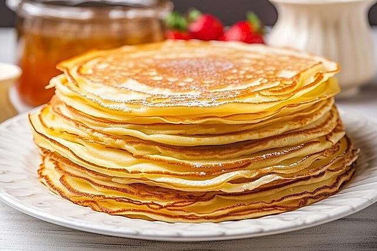

Pancakes

Description
Pancakes - nice for every occasion
Ingredients
- 2 eggs
- 2 tbsp Sugar
- 1 pinch Salt
- 200ml milk
- 200g Flour
- 1 teaspoon baking powder
- oil for baking
Steps
- Beat the eggs with the sugar until creamy, then add the milk and stir.
- Now stir in the salt, flour and baking powder until you get a smooth batter.
- If you want particularly fluffy pancakes, separate the eggs and fold the stiffly beaten egg whites into the batter at the very end.
- Now let the finished dough rise a little.
- Using a ladle, place a dollop of batter into the heated, greased pan and fry over medium-high heat.
- As soon as small bubbles form, turn the pancake. When the second side is also golden brown, the pancake is done.